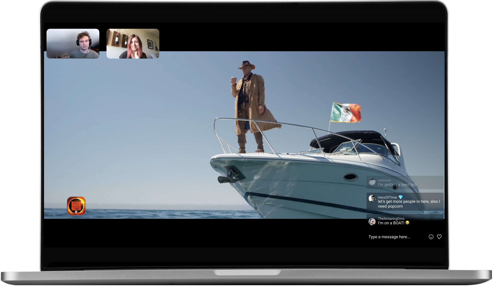

Watch parties made easy.
Watch whatever you want with friends online :
movies, TV shows, you name it. Share your
screen and camera or launch content directly from Kast TV in your watch arties.Join millions of kasters today!
Featured in
Kast has probably never been more relevant - or necessary - than it is right now.